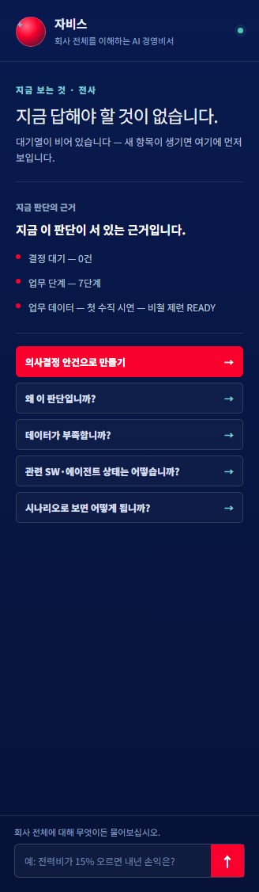
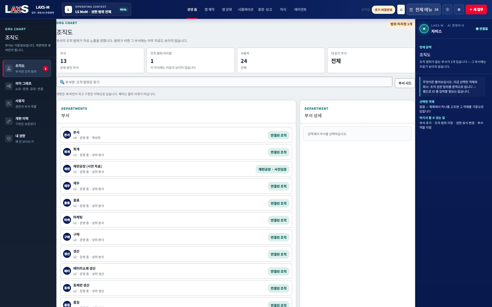
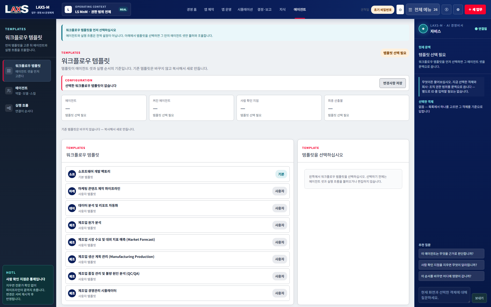
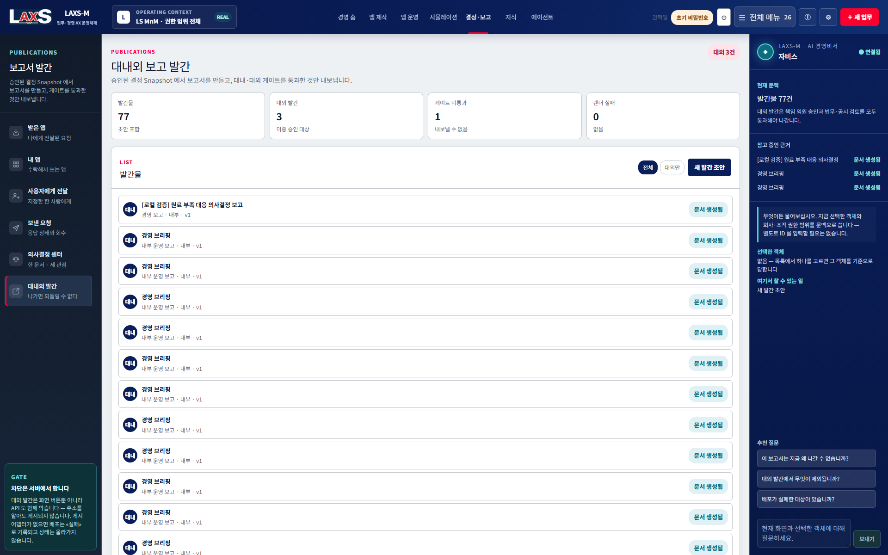
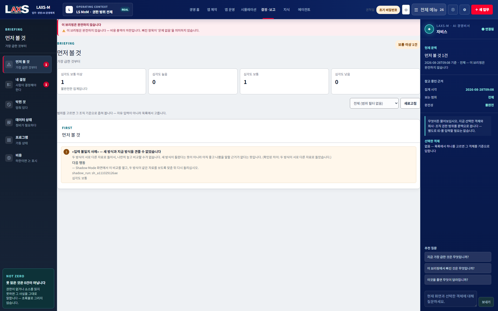

LAXS-M · VERSION 0.91 · 작성자 : 권혁일(Hyuk il Kwon)
PRODUCT & FUNCTION GUIDE · 2026
무엇을 입력하고,
무엇을 만들며,
어떤 통제로 운영하는지 설명합니다.
LAXS-M의 실제 화면을 기준으로 현업 SW 생성, 업무영역별 업무키트, 전사 데이터·온톨로지, 통합 시뮬레이션, 의사결정과 발간 기능의 목적·입력·출력·통제·다음 연결을 확인하는 제품 참조서입니다.
Operational App Factory현업이 업무 기능을 직접 설계·생성·운영
Enterprise Ontology사람·조직·업무·데이터·영향 관계를 전사 의미망으로 연결
Decision-to-Execution부서별 시뮬레이션을 회의·결정·실행·효과 측정까지 연결
01 / 21

Legacy via MCPERP · MES · LPL
MDM & Catalog자재 · 공정 · 설비 · 고객 · 계정
External Indicators환율 · 금리 · 운임 · 원자재 · 전력
Knowledge Hub표준 · 논문 · 사규 · 계약 · 보고서
App & Twin Data현업 생성 SW · 시뮬레이터 운영 데이터
AI-ASSISTED · HUMAN-DECIDED기업 경영 온톨로지조직 · 제품 · 자재 · 주문 · 구매 · 운송 · 재고 · 공정 · 설비 · 생산 · 품질 · 판매 · 현금 · 손익
원료구매계약선적공정생산계획재고매출현금흐름손익
영향 경로무엇이 어디에 영향을 주는가
결정론적 계산얼마나 변하는가
근거 설명왜 이 답이 나왔는가
권한 통제누가 어느 범위까지 보는가
역할 분리온톨로지는 관계와 영향 경로를 찾고, 계산 그래프는 수치를 산출하며, LLM은 결과를 해석·설명합니다. LLM이 경영 숫자를 임의로 만들지 않습니다.
02 / 21
“환율이 10% 오르고 원료 도입이 15일 지연되며 전기료가 12% 상승하면, 하반기 생산·현금·손익은 어떻게 달라지고 무엇을 결정해야 하는가?”
1질문 해석
기간·조직·제품·시나리오·결정 목적을 확정합니다.
2근거 수집
ERP·MES·LPL, 기준정보, 외부지표, 현업 앱 데이터를 동일 시점 Snapshot으로 고정합니다.
3온톨로지 탐색
환율→구매원가→재고→생산→매출채권→현금→손익의 확정된 영향 경로를 찾습니다.
4시나리오 계산
기준·공격·위험안을 같은 입력 지문으로 계산하고 민감도와 최악 조건을 비교합니다.
5의사결정 패키지
요청자·결정권자·영향부서용 검토서와 회의 요청, 결정 조건을 생성합니다.
6실행·효과 측정
확정 결과를 실행 과제로 전환하고 실제 성과를 기준선과 대사해 다음 학습으로 환류합니다.
영향 경로구매원가 → 운전자본 → 생산계획 → 현금흐름 → 손익
결정 결과대안별 수치 · 리스크 · 조건 · 담당 · 기한 · 중간 점검 기준
03 / 21
1경영진·조직 책임자
시작: 경영 홈·전사 브리핑
완료: 근거가 봉인된 결정과 실행조건 확정
2Power User
시작: 업무키트·현업 SW 생성
완료: 검증된 부서 시뮬레이션과 운영 앱 배포
3Data Owner
시작: 기준정보·카탈로그·품질
완료: 소유·범위·유효기간이 확정된 데이터 공급
4AX & Product Lead
시작: 프로젝트 통제·의사결정
완료: 우선순위·품질·릴리스·효과 측정 일치
5AI·플랫폼 운영자
시작: 에이전트·워크플로우·모델 정책
완료: 확정된 템플릿과 비용·품질 통제 배포
6감사·보안·발간 책임자
시작: 조직 권한·감사 원장·발간
완료: 독자·보안등급·근거에 맞는 확정 기록
공통 문맥
어느 화면에서 시작해도 회사·조직·사용자 권한, 데이터 인증판, 기준일, 전사 시나리오와 감사 기록을 동일하게 적용합니다.
04 / 21
목적누가 어떤 판단을 위해 쓰는가
입력회사·조직·기준일·인증판·가정
출력앱·데이터·계산·결정·문서
통제권한·확정·버전·지문·감사
연결다음 화면·업무키트·실행 과제
화면은 서버 사실을 표시
브라우저가 숫자·확정·권한을 임의 계산하지 않고, 서버가 봉인한 상태와 근거를 표시합니다.
코드·ID는 시스템이 관리
사용자에게 내부 식별자 입력을 강제하지 않고 이름과 업무 의미를 보여주며 ID는 채번 규칙으로 자동 관리합니다.
실패는 빈값으로 숨기지 않음
읽지 못함·권한 없음·미확정·자료 없음·계산 불가를 구분해 사용자에게 필요한 다음 행동을 안내합니다.
AI와 통제의 경계AI는 추천·초안·해석·설명을 돕고, 확정·권한·경영 수치·발간·실행은 정책 엔진과 결정론적 계산, 사용자 결정이 통제합니다.
05 / 21
경영·의사결정
- 경영 현황·의사결정 홈
- 업무영역별 업무키트·전사 통합 시뮬레이션
- 의사결정·회의 실행 관리
- 대내외 보고서 작성·발간
- 전사 경영 브리핑
현업 생성·운영
- AI 경영비서 · 업무/데이터 설계 상담
- 현업 SW 생성
- 프로젝트 실행 통제·WBS
- SW·보고서·시뮬레이터 산출물
- 사용자 전달·앱 주머니
데이터·온톨로지
- 기업 지식 허브
- 기준정보·데이터 카탈로그
- 용어·동의어 사전
- Crosswalk·MCP 연계
- 기업 경영 의미지도
조직·거버넌스
- 회사·사업부·공장 구조
- 사용자·역할·권한
- 데이터 계약·품질
- 결정·감사 원장
- 가상 회사 Sandbox
AI 운영
- AI 에이전트 운영
- 워크플로우 템플릿
- 모델·비용 라우팅
- 사용자 검토 지점
- 스킬 진화·텔레메트리
PRODUCT COREGOVERNED OPERATING MODELDEMO/SYNTHETIC DATA
07 / 21
LAXS-M · VERSION 0.91
II
프로그램 기능과
실제 작업 화면
각 기능을 화면 목적·핵심 기능·출력·통제·업무 흐름으로 설명합니다. 제품명은 LAXS-M이며, 자비스는 사용자 문맥을 이어 주는 AI 경영비서입니다.
08 / 21

업무 흐름회사·조직 선택→결정·차단 확인→근거·신뢰 확인→전문 기능 진입
09 / 21

업무 흐름목표 질문→추천안 선택→데이터 키트 제안→생성 계획 전환
10 / 21

업무 흐름업무 요구→WBS·에이전트 조율→구현·검증→앱 미리보기·릴리스
11 / 21
F-04
프로젝트 실행 통제
전체 제작 단계와 WBS, 현재 작업, 사용자 결정, AI 활동, 다음 전환 조건을 숨기지 않습니다.
주요 사용자현업 오너 · PM · 검토자 · 개발 운영자

업무 흐름전체 흐름 확인→현재 WBS 수행→사용자 결정→다음 단계 자동 전환
12 / 21

업무 흐름자료 등록→등급·범위 확정→자연어 검색→생성·판단 근거 연결
13 / 21

업무 흐름데이터 유형 정의→레코드·카탈로그 등록→확정·버전 고정→온톨로지·계산 공급
14 / 21


업무 흐름회사·조직 등록→소유·권한 배정→품질·계약 판정→전 기능 강제
15 / 21


업무 흐름업무 목표 선택→에이전트 구성→연결·검토 지점 설계→템플릿 배포
16 / 21

업무 흐름인증판·기준선 고정→가정 입력→결정론 계산→결정 패키지 전환
17 / 21

업무 흐름시뮬레이션 선택→세 관점 검토서→회의 요청·의견 수렴→결정·실행 과제
18 / 21

업무 흐름결정 Snapshot→독자별 보고서 생성→게이트 확정→발간·이력 보존
19 / 21

업무 흐름전사 상태 수집→완전성·심각도 판정→우선순위 브리핑→결정·조치 화면 연결
20 / 21
구매원료 도입 계획
계약 단가·환율·수량·납기
외부선적·통관·운송
Legacy Portal / MCP
물류도착·이동·재고
ETA·야드·재고일수
생산투입·공정·품질
생산계획·수율·병목
판매출하·매출
수주·납기·매출채권
재무현금·손익
운전자본·원가·이익
SCENARIO INPUT복합 충격 시나리오환율 +10% · 원료 도입 +15일 지연 · 전기료 +12%. 수치는 DEMO/SYNTHETIC 시나리오이며 실제 경영 성과가 아닙니다.
INTEGRATED OUTPUT경로와 수치의 동시 증명생산량·재고·운전자본·현금·영업이익 변화와 부서별 기여도를 동일 입력 지문으로 산출합니다.
DECISION & EXECUTION대안·책임·기한까지 연결구매량·생산계획·자금조달 대안을 비교하고 회의 요청, 결정권자, 실행 책임자와 기한을 남깁니다.
OPERATING PROOF효과는 기준선과 실측으로 검증도입 전 분석시간·수작업·오차를 기준선으로 고정하고, 적용 후 실제 사용·리드타임·오차·비용을 같은 방식으로 비교합니다.
Legacy 공존 원칙기존 ERP·MES·LPL은 원천·실행 시스템으로 유지합니다. LAXS-M은 확정된 파일 Snapshot·읽기 전용 계약·API·MCP 어댑터를 통해 데이터를 결속하고, 원천 시스템의 쓰기 책임을 침범하지 않습니다.
21 / 21